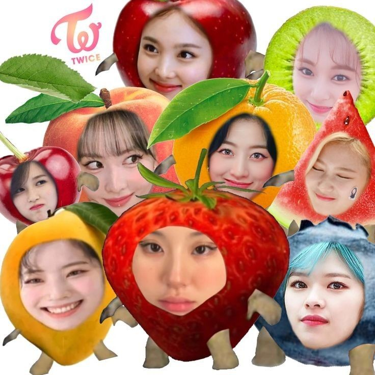

- 
- "Twice UwU"
TWICE
BETWEEN 1&2
TWICE, a Global Top Girl Group, will Release “BETWEEN 1&2”, a New Mini Album, and “Talk that Talk”, the title song, on August 26th, Simultaneously Worldwide!
- The long-awaited first comeback in 2022! New song “Talk that Talk” – the one word that TWICE wants to hear from ONCE! "L-O-V-E"
- Secret codes that only TWICE and ONCE can interpret! Expressing a strong bond and great affection throughout the album!
- Jihyo, Dahyun, and Chaeyoung wrote lyrics alone & the collaboration of top composers such as Woo Min Lee, Danke, LDN Noise, and Melanie FontanaTWICE will release “BETWEEN 1&2”, a new mini album, and “Talk that Talk”, the title song, on August 26th.
TWICE’s “'Formula of Love: O+T=<3”, its third studio album released in November 2021, ranked third on the “US Billboard 200”, which was its best achievement. In June of this year, Nayeon released her first solo album, “IM NAYEON”, among TWICE members, which ranked 7th place on the “Billboard 200”, which was the best record among K-pop solo artists of all time. This reaffirmed the status of TWICE.
The new album “BETWEEN 1&2” will be released amid the passionate support of domestic and foreign fans. The name of this album means “stories between ONCE (fandom name) and TWICE” and implies the strong bond between ONCE and TWICE, who have been the closest and most precious to each other for a long time.
The overall album is full of meaningful elements between ONCE and TWICE – including the teaser poster announcing the comeback of TWICE to the jacket image. The space in the concept photo uses TWICE's official colors to make it their own secret code and hideout. It also has various props, including animal dolls that symbolize the members, and various symbolic numbers, which are secret codes that only ONCE and TWICE can interpret. You can find their great love and affection for each other.
- TRACK LIST
- 1. Talk that Talk *Title
- 2. Queen of Hearts
- 3. Basics
- 4. Trouble
- 5. Brave
- 6. Gone
- 7. When We Were Kids